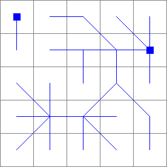
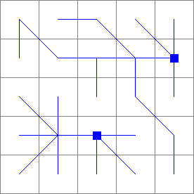
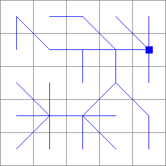

lddcreate¶
lddcreate
Local drain direction map with flow directions from each cell to its steepest downslope neighbour
Result = lddcreate(elevation, outflowdepth, corevolume, corearea, catchmentprecipitation)
- elevation
- spatial scalar
- corevolume
- spatial, non spatial scalar
- catchmentprecipitation
- spatial, non spatial scalar
- corearea
- spatial, non spatial scalar
- outflowdepth
- spatial, non spatial scalar
- Result
- spatial ldd
Options¶
pit removing at edges of the map
- --lddout
- small catchments at the edge of the map are not considered as potentially beingnaffected by the pit removing process: pits which are at the edge of the map arennot removed. These pits remain in the map as outflow points of these small catchmentsn(default).
- --lddin
- pits at the edge of the map (outflow points of a catchment) are removed likenthe other pits (if they have core dimensions smaller than the pit dimension thresholds).nOn the result their original catchment cells (including the pit cell) will drainnin another catchment.
--unittrue (default) or --unitcell
- --unittrue
- elevation, outflowdepth and catchmentprecipitation is measured in true length, corearea in true area and corevolume in true volume. Units used for elevation and horizontal distance in x and y direction must be the same (default).
- --unitcell
- elevation, outflowdepth and catchmentprecipitation is measured in number of cell lengths, corearea in number of cells and corevolume in number of 3D blocks with edges of one cell length.
Operation¶
The operator creates a local drain direction map using the 8 point pour algorithm with flow directions from each cell to its steepest downslope neighbour. It determines for each cell its neighbour cell to whom material (for example water) will flow to. Each cell on the local drain direction map Result is assigned an arrow pointing to this downstream cell. This is the local drain direction of the cell. These directions linked to each other results in a local drain direction network: the flow pattern on the map. The directions are coded according to the standard codes used for the local drain direction data type:

Directions of ldd codes. A value 5 (centre) defines a cell without local drain direction (a pit).
Coincidently, the values resemble the layout of the numeric key pad of your computer. A code 5 represents a pit, which is a cell without a local drain direction; it is surrounded by cells draining towards the cell. Additionally each catchment on Result ends with a pit cell at the edge of the map, this cell is considered to be the outflow point of the catchment.
For each cell, the local drain direction is determined on basis of the elevation cell values on the digital elevation model elevation, in a 3 x 3 cells window with the cell under consideration in the centre. Dependent on the elevation of the centre cell with respect to its 8 surrounding cells, the local drain direction is determined as follows: if a cell has one or more neighbours with a lower elevation on elevation it is assigned the local drain direction to the neighbour cell which results in the steepest drainage slope. If two or more neighbouring cells with the steepest drainage slope can be found, the local drain direction is randomly chosen, to one of these cells.
A cell may have neighbours which are at the same elevation as the cell under consideration. One cell of this kind or a set of neighbouring cells of this kind represent a flat area. Two types of flat areas may occur. The first type is bordered on one or more sides by one cell or a set of cells at lower elevation. Flat areas of this type are filled in with local drain directions iteratively, starting at the edge of the flat area bordered by an area at a lower elevation: each time the local drain direction is determined for one of the cells on the flat area which has one or more neighbour(s) with a local drain direction not pointing back into the cell under consideration. The local drain direction of the cell under consideration will be in direction of one of these cells (randomly chosen).
The second type of flat area is a flat area surrounded by cells at higher elevation. Flat areas of this type are iteratively filled in with local drain directions starting at the edge of the flat area and assigning drain directions to cells which have neighbours draining into the cell under consideration. Each iteration, a cell is assigned a drain direction to one of its neighbouring cells on the flat area. The result of resolving flat areas of this type is a map in which all cells are assigned a drain direction, except one cell which is a pit.
Pits are defined as those cells that only have neighbours at higher elevation than the cell under consideration, or a cell somewhere in the centre of a flat area which is surrounded by cells at higher elevation, as foresaid. Therefore, pits are those cells that only have neighbours pointing towards them, and no neighbours at lower or equal elevation that they can point to.

A sprinkling of the few definitions used in theory of pit removing.
Pits can be removed by assigning artificial local drain directions to depressions which do not have an outlet, shown in the figure above . The catchment of a pit is circumscribed by the divide; this is a line which draws a boundary between cells that drain to the pit and cells that drain to one of the neighbouring catchments. For a pit which will be removed, the upstream path from the pit over the local drain directions towards and over the divide is determined which crosses the divide moving through cells at the lowest possible elevation. The cell on this path at the highest elevation is called the outflow cell, its elevation corresponds with the overflow level of the catchment of the pit. Now, the pit is removed by reversing the original local drain directions on this upstream path to the outflow cell. Water for instance which falls in a certain cell in the catchment is removed from the catchment by tracing the local drain directions as follows: first it moves over the original local drain directions towards the pit; then it leaves the catchment by following the traversed local drain direction path upstream to the outflow cell and then downstream into the neighbouring catchment.
The choice whether a pit must be removed or not depends on by what a pit is caused by. Most of the pits will be due to data errors in the digital elevation model elevation, grid mismatch or lack of resolution. These artificial pits must be removed. Additionally pits can be caused by natural phenomena: they can occur at the lowest point in depressions in a landscape. For a proper analysis it is important to maintain these natural pits as real pits on the local drain direction map. The choice whether a pit is removed or not can be made dependent on the dimension of the core of the pit. The core of a pit is the zone which contains all cells in the pit catchment with an elevation lower than the outflow level, see Figure. The dimensions of a pit core can be defined by core depth, core volume, core area and catchmentprecipitation. The core depth of a pit is the overflow level of a pit minus the elevation of the pit cell, see Figure. The core volume of a pit is defined as the total volume that is needed to fill up the core area to the overflow level. The core area of a pit is the area of the cells in a core. The catchment precipitation is the amount of rainfall in a pit catchment needed for filling up a pit core, assuming that all water which falls in the pit catchment accumulates in the core. It is defined by the volume of a core divided by the area of the catchment of a core. Using these pit core dimensions the choice is made whether a pit is resolved or not: for each pit cell the core depth, core volume, core area and catchmentprecipitation in millimetres are calculated. If all of these values are smaller than the threshold values on respectively outflowdepth, corevolume, corearea,catchmentprecipitation at the pit cell under consideration, the pit will be removed; if one value is larger or equal it will not be removed.
In general artificial pits will be relatively small compared to pits which are considered to be natural features of the landscape. So, the pit core dimension thresholds permit for distinguishing between these two sorts of pits. Additionally some pits of a certain size can be removed from your map while keeping other pits of the same size. This can be done by choosing dimension threshold values which are different for each pit on your map. Try different values and use the PCRaster operators interactively by running lddcreate with different combinations of outflowdepth, corevolume,corearea,catchmentprecipitation each time adjusting the thresholds.
Notes¶
A cell with missing value on one or more of the input expressions is totally ignored during operation of lddcreate; it is assigned a missing value on Result.
Here, a somewhat generalized description of pit removing is given. For a detailed description, see Van Deursen, 1995.
Group¶
This operation belongs to the group of Derivatives of elevation maps
Examples¶
- • pcrcalcbindingResult1 = Result1.map;Dem = Dem.map;initialreport Result1 = lddcreate(Dem,9999999,9999999,9999999,9999999);• pythonDem = readmap(“Dem.map”)Result1 = lddcreate(Dem,9999999,9999999,9999999,9999999)
Result1.map Dem.map  
- • pcrcalc#! –lddinbindingResult3 = Result3.map;Dem = Dem.map;initialreport Result3 = lddcreate(Dem,9999999,5000,9999999,9999999);• pythonsetglobaloption(“lddin”)Dem = readmap(“Dem.map”)Result3 = lddcreate(Dem,9999999,5000,9999999,9999999)
Result3.map Dem.map 
- • pcrcalc#! –lddinbindingResult2 = Result2.map;Dem = Dem.map;initialreport Result2 = lddcreate(Dem,9999999,9999999,9999999,9999999);• pythonsetglobaloption(“lddin”)Dem = readmap(“Dem.map”)Result2 = lddcreate(Dem,9999999,9999999,9999999,9999999)
Result2.map Dem.map 